|
5.
Process Improvement
5.5. Advanced topics 5.5.6. What is a mixture design?
|
|||
| Options for setting up experiments for processes that have both standard process variables and mixture variables | Consider a mixture experiment
consisting of q mixture components and n process variables.
First consider the case where each of the process variables to be studied
has only two levels. Orthogonally scaled factor settings for the process
variables will be used (i.e. -1 is the low level, 1 is the high level,
0 is the center point). Also assume that each of the components xi can
range from 0 to 1. The region of interest then for the process variables
is an n-dimensional hyper cube.
The region of interest for the mixture components is the (q-1)-dimensional simplex. The combined region of interest for both the process variables and the mixture components is of dimensionality q - 1 + n. For example, consider three mixture components (x1, x2, x3) with three process variables (z1, z2, z3). The dimensionality of the region is 5. The combined region of interest for three mixture components and three process variables is shown in the two figures below. The complete space of the design can be viewed in either of two ways. The first diagram shows the idea of a full factorial at each vertex of the three component simplex region. The second diagram show the idea of three component simplex region at each point in the full factorial. In either case, the same overall process space is being investigated. |
||
|
 FIGURE 5.13 Simplex Region of a Three Component Mixture with a 23 Full Factorial at Each Pure Mixture Run |
|||
|
 FIGURE 5.14 Process Space of a 23 Full Factorial with the Three Component Simplex Region at Each Point of the Full Factorial |
|||
| As can be seen from the above diagrams, setting up the design configurations in the process variables and mixture components involves setting up a mixture design at each point of a configuration in the process variables, or similarly, creating a factorial arrangement in the process variables at each point of composition in the mixture components. For the example depicted in the above two diagrams, this is not the only design available for this number of mixture components with the specified number of process variables. Another option might be to run a fractional factorial design at each vertex or point of the mixture design, where the same fraction is run at each mixture design point. Still another option might be to run a fractional factorial design at each vertex or point of the mixture design, where a different fraction is run at each mixture design point. | |||